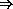

R6RS Syntax-Case Macros
Kent Dybvig
This SRFI is being submitted by a member of the Scheme Language Editor's Committee as part of the R6RS Scheme standardization process. The purpose of such "R6RS SRFIs" is to inform the Scheme community of features and design ideas under consideration by the editors and to allow the community to give the editors some direct feedback that will be considered during the design process.
At the end of the discussion period, this SRFI will be withdrawn. When the R6RS specification is finalized, the SRFI may be revised to conform to the R6RS specification and then resubmitted with the intent to finalize it. This procedure aims to avoid the situation where this SRFI is inconsistent with R6RS. An inconsistency between R6RS and this SRFI could confuse some users. Moreover it could pose implementation problems for R6RS compliant Scheme systems that aim to support this SRFI. Note that departures from the SRFI specification by the Scheme Language Editor's Committee may occur due to other design constraints, such as design consistency with other features that are not under discussion as SRFIs.
| 1. | Abstract | ||||||||||||||||||||
| 2. | Rationale | ||||||||||||||||||||
| 3. | Specification | ||||||||||||||||||||
| |||||||||||||||||||||
| 4. | Reference Implementation | ||||||||||||||||||||
| 5. | Issues | ||||||||||||||||||||
| |||||||||||||||||||||
| 6. | Acknowledgments | ||||||||||||||||||||
| 7. | References | ||||||||||||||||||||
| 8. | Copyright |
The syntactic abstraction system described here extends the R5RS macro system with support for writing low-level macros in a high-level style, with automatic syntax checking, input destructuring, output restructuring, maintenance of lexical scoping and referential transparency (hygiene), and support for controlled identifier capture, with constant expansion overhead. Because it does not require literals, including quoted lists or vectors, to be copied or even traversed, it preserves sharing and cycles within and among the constants of a program. It also supports source-object correlation, i.e., the maintenance of ties between the original source code and expanded output, allowing implementations to provide source-level support for debuggers and other tools.
While many syntactic abstractions are succinctly expressed using the high-level syntax-rules form, others are difficult or impossible to write, including some that introduce visible bindings for or references to identifiers that do not appear explicitly in the input form, ones that maintain state or read from the file system, and ones that construct new identifiers. The syntax-case system [5] described here allows the programmer to write transformers that perform these sorts of transformations, and arbitrary additional transformations, without sacrificing the default enforcement of hygiene or the high-level pattern-based syntax matching and template-based output construction provided by R6RS syntax-rules.
A syntactic abstraction typically takes the form (keyword subform ...), where keyword is the identifier that names the syntactic abstraction. The syntax of each subform varies from one syntactic abstraction to another. Syntactic abstractions can also take the form of improper lists (or even singleton identifiers; see Section 3.6), although this is less common.
New syntactic abstractions are defined by associating keywords with transformers. Keyword bindings are created using define-syntax, let-syntax, or letrec-syntax. Transformers are created using syntax-rules or syntax-case and syntax, which allow transformations to be specified via pattern matching and template reconstruction.
Syntactic abstractions are expanded into core forms at the start of evaluation (before compilation or interpretation) by a syntax expander. (The set of core forms is implementation-dependent, as is the representation of these forms in the expander's output.) The expander is invoked once for each top-level form in a program. If the expander encounters a syntactic abstraction, it invokes the associated transformer to expand the syntactic abstraction, then repeats the expansion process for the form returned by the transformer. If the expander encounters a core form, it recursively processes the subforms, if any, and reconstructs the form from the expanded subforms. Information about identifier bindings is maintained during expansion to enforce lexical scoping for variables and keywords.
To handle internal definitions, the expander processes the initial forms in a library or lambda body from left to right. How the expander processes each form encountered as it does so depends upon the kind of form.
An error is signaled if the keyword that identifies one of the body forms as a definition (derived or core) is redefined by the same definition or a later definition in the same body. To catch this error, the expander records the identifying keyword for each syntactic abstraction, define-syntax form, define form, begin form, let-syntax form, and letrec-syntax form it encounters while processing the definitions and checks each newly defined identifier (define or define-syntax left-hand side) against the recorded keywords, as with bound-identifier=? (Section 3.7). For example, the following forms result in an error.
(let ()
(define define 17)
define)
(let-syntax ([def0 (syntax-rules ()
[(_ x) (define x 0)])])
(let ()
(def0 z)
(define def0 '(def 0))
(list z def0)))
Expansion of each variable definition right-hand side is deferred until after all of the definitions have been seen so that each keyword and variable references within the right-hand side resolves to the local binding, if any.
Note that this algorithm does not directly reprocess any form. It requires a single left-to-right pass over the definitions followed by a single pass (in any order) over the body expressions and deferred right-hand sides.
For example, in
(lambda (x)
(define-syntax defun
(syntax-rules () [(_ (x . a) e) (define x (lambda a e))]))
(defun (even? n) (or (= n 0) (odd? (- n 1))))
(define-syntax odd? (syntax-rules () [(_ n) (not (even? n))]))
(odd? (if (odd? x) (* x x) x)))
The definition of defun is encountered first, and the keyword defun is associated with the transformer resulting from the expansion and evaluation of the corresponding right-hand side. A use of defun is encountered next and expands into a define form. Expansion of the right-hand side of this define form is deferred. The definition of odd? is next and results in the association of the keyword odd? with the transformer resulting from expanding and evaluating the corresponding right-hand side. A use of odd? appears next and is expanded; the resulting call to not is recognized as an expression because not is bound as a variable. At this point, the expander completes the expansion of the current expression (the not call) and the deferred right-hand side of the even? definition; the uses of odd? appearing in these expressions are expanded using the transformer associated with the keyword odd?. The final output is the equivalent of
(lambda (x)
(letrec* ([even? (lambda (n)
(or (= n 0) (not (even? (- n 1)))))])
(even? x)))
although the structure of the output is implementation dependent.
Barendregt's hygiene condition [1] for the lambda-calculus is an informal notion that requires the free variables of an expression N that is to be substituted into another expression M not to be captured by bindings in M when such capture is not intended. Kohlbecker, et al [7] propose a corresponding hygiene condition for macro expansion that applies in all situations where capturing is not explicit: "Generated identifiers that become binding instances in the completely expanded program must only bind variables that are generated at the same transcription step." In the terminology of this document, the "generated identifiers" are those introduced by a transformer rather than those present in the form passed to the transformer, and a "macro transcription step" corresponds to a single call by the expander to a transformer. Also, the hygiene condition applies to all introduced bindings rather than to introduced variable bindings alone.
This leaves open what happens to an introduced identifier that appears outside the scope of a binding introduced by the same call. Such an identifier refers to the lexical binding in effect where it appears (within a syntax template; see Section 3.6) inside the transformer body or one of the helpers it calls. This is essentially the referential transparency property described by Clinger and Rees [2].
Thus, the hygiene condition can be restated as follows:
A binding for an identifier introduced into the output of a transformer call from the expander must capture only references to the identifier introduced into the output of the same transformer call. A reference to an identifier introduced into the output of a transformer refers to the closest enclosing binding for the introduced identifier or, if it appears outside of any enclosing binding for the introduced identifier, the closest enclosing lexical binding where the identifier appears (within a syntax template) inside the transformer body or one of the helpers it calls.
Explicit captures are handled via datum->syntax; see Section 3.8.
The expander maintains hygiene with the help of marks and substitutions. Marks are applied selectively by the expander to the output of each transformer it invokes, and substitutions are applied to the portions of each binding form that are supposed to be within the scope of the bound identifiers. Marks are used to distinguish like-named identifiers that are introduced at different times (either present in the source or introduced into the output of a particular transformer call), and substitutions are used to map identifiers to their expand-time values.
Each time the expander encounters a syntactic abstraction and invokes the associated transformer, it creates a fresh mark and marks the introduced portions of the transformer output with this mark, leaving portions of the output that came from the input unmarked. (This may be done by applying an antimark to the input, then applying the fresh mark to the output. When the mark is applied to antimarked input, the marks cancel, effectively leaving the portions of the output that came from the input unmarked.)
Each time the expander encounters a binding form it creates a set of substitutions, each mapping one of the (possibly marked) bound identifiers to information about the binding. (For a lambda expression, the expander might map each bound identifier to a representation of the formal parameter in the output of the expander. For a let-syntax form, the expander might map each bound identifier to the associated transformer.) These substitutions are applied to the portions of the input form in which the binding is supposed to be visible.
Marks and substitutions together form a wrap that is layered on the form being processed by the expander and pushed down toward the leaves as necessary. A wrapped form is referred to as a wrapped syntax object. Ultimately, the wrap may rest on a leaf that represents an identifier, in which case the wrapped syntax object is referred to more precisely as an identifier. An identifier contains a name along with the wrap. (Names are typically represented by symbols.)
When a substitution is created to map an identifier to an expand-time value, the substitution records the name of the identifier and the set of marks that have been applied to that identifier, along with the associated expand-time value. The expander resolves identifier references by looking for the latest matching substitution to be applied to the identifier, i.e., the outermost substitution in the wrap whose name and marks match the name and marks recorded in the substitution. The name matches if it is the same name (if using symbols, then by eq?), and the marks match if the marks recorded with the substitution are the same as those that appear below, i.e., were applied before the substitution in the wrap. Marks applied after a substitution, i.e., appear over the substitution in the wrap, are not relevant and are ignored.
An algebra that defines how marks and substitutions work more precisely is given in Section 2.4 of Oscar Waddell's PhD thesis [9].
Keyword bindings may be established with define-syntax, let-syntax, or letrec-syntax.
A define-syntax form is a definition and may appear anywhere other definitions may appear. The syntax
(define-syntax keyword transformer-expr)
binds keyword to the result of evaluating, at expansion time, the expression transformer-expr, which must evaluate to a transformer (Section 3.4).
The example below defines let* as a syntactic abstraction, specifying the transformer with syntax-rules (see Section 3.10).
(define-syntax let*
(syntax-rules ()
[(_ () e1 e2 ...) (let () e1 e2 ...)]
[(_ ([i1 v1] [i2 v2] ...) e1 e2 ...)
(let ([i1 v1])
(let* ([i2 v2] ...) e1 e2 ...))]))
Keyword bindings established by define-syntax are visible throughout the body in which they appear, except where shadowed by other bindings, and nowhere else, just like variable bindings established by define. All bindings established by a set of internal definitions, whether keyword or variable definitions, are visible within the definitions themselves. For example, the expression
(let ()
(define even?
(lambda (x)
(or (= x 0) (odd? (- x 1)))))
(define-syntax odd?
(syntax-rules ()
[(_ x) (not (even? x))]))
(even? 10))
is valid and should return #t.
An implication of the left-to-right processing order (Section 3.1) is that one internal definition can affect whether a subsequent form is also a definition. For example, the expression
(let ()
(define-syntax bind-to-zero
(syntax-rules ()
[(_ id) (define id 0)]))
(bind-to-zero x)
x)
evaluates to 0, regardless of any binding for bind-to-zero that might appear outside of the let expression.
let-syntax and letrec-syntax are analogous to let and letrec but bind keywords rather than variables. Like begin, a let-syntax or letrec-syntax form may appear in a definition context, in which case it is treated as a definition, and the forms in the body of the form must also be definitions. A let-syntax or letrec-syntax form may also appear in an expression context, in which case the forms within their bodies must be expressions.
The syntax
(let-syntax ((keyword transformer-expr) ...) form1 form2 ...)
binds the keywords keyword ... to the results of evaluating, at expansion time, the expressions transformer-expr ..., which must evaluate to transformers (Section 3.4).
Keyword bindings established by let-syntax are visible throughout the forms in the body of the let-syntax form, except where shadowed, and nowhere else.
The syntax
(letrec-syntax ((keyword transformer-expr) ...) form1 form2 ...)
is similar, but the bindings established by let-syntax are also visible within transformer-expr ....
The forms in the of a let-syntax or letrec-syntax are treated, whether in definition or expression context, as if wrapped in an implicit begin.
The following example highlights how let-syntax and letrec-syntax differ.
(let ([f (lambda (x) (+ x 1))])
(let-syntax ([f (syntax-rules ()
[(_ x) x])]
[g (syntax-rules ()
[(_ x) (f x)])])
(list (f 1) (g 1)))) "> (1 2)
(let ([f (lambda (x) (+ x 1))])
(letrec-syntax ([f (syntax-rules ()
[(_ x) x])]
[g (syntax-rules ()
[(_ x) (f x)])])
(list (f 1) (g 1)))) "> (1 1)
The two expressions are identical except that the let-syntax form in the first expression is a letrec-syntax form in the second. In the first expression, the f occurring in g refers to the let-bound variable f, whereas in the second it refers to the keyword f whose binding is established by the letrec-syntax form.
Keywords occupy the same name space as variables, i.e., within the same scope, an identifier can be bound as a variable or keyword, or neither, but not both.
A transformer is a transformation procedure or a variable transformer. A transformation procedure is a procedure that must accept one argument, a wrapped syntax object (Section 3.5) representing the input, and return a syntax object (Section 3.5) representing the output. The procedure is called by the expander whenever a reference to a keyword with which it has been associated is found. If the keyword appears in the first position of a list-structured input form, the transformer receives the entire list-structured form, and its output replaces the entire form. If the keyword is found in any other definition or expression context, the transformer receives a wrapped syntax object representing just the keyword reference, and its output replaces just the reference. An error is signaled if the keyword appears on the left-hand side of a set! expression.
Variable transformers are similar. If a keyword associated with a variable transformer appears on the left-hand side of a set! expression, however, an error is not signaled. Instead, the transformer receives a wrapped syntax object representing the entire set! expression as its argument, and its output replaces the entire set! expression. A variable transformer is created by passing a transformation procedure to make-variable-transformer:
(make-variable-transformer procedure)
make-variable-transformer returns an implementation-dependent encapsulation of the transformation procedure that allows the expander to recognize that it is a variable transformer.
A syntax object is a representation of a Scheme form that contains contextual information about the form in addition to its structure. This contextual information is used by the expander to maintain lexical scoping and may also be used by an implementation to maintain source-object correlation.
Syntax objects may be wrapped or unwrapped. A wrapped syntax object (Section 3.2), consists of a wrap (Section 3.2) and some internal representation of a Scheme form. (The internal representation is unspecified, but is typically a Scheme s-expression or s-expression annotated with source information.) A wrapped syntax object representing an identifier is itself referred to as an identifier; thus, the term identifier may refer either to the syntactic entity (symbol, variable, or keyword) or to the concrete representation of the syntactic entity as a syntax object. Wrapped syntax objects are distinct from other types of values.
An unwrapped syntax object is one that is unwrapped, fully or partially, i.e., whose outer layers consist of lists and vectors and whose leaves are either wrapped syntax objects or nonsymbol values.
The term syntax object is used in this document to refer to a syntax object that is either wrapped or unwrapped. More formally, a syntax object is:
The distinction between the terms "syntax object" and "wrapped syntax object" is important. For example, when invoked by the expander, a transformer (Section 3.4) must accept a wrapped syntax object but may return any syntax object, including an unwrapped syntax object.
Transformers destructure their input with syntax-case and rebuild their output with syntax.
A syntax-case expression has the following syntax.
(syntax-case expr (literal ...) clause ...)
Each literal must be an identifier. Each clause must take one of the following two forms.
(pattern output-expr)
(pattern fender output-expr)
A pattern is an identifier, constant, or one of the following.
(pattern*)
(pattern+ . pattern)
(pattern* pattern ellipsis pattern*)
(pattern* pattern ellipsis pattern* . pattern)
#(pattern*)
#(pattern* pattern ellipsis pattern*)
An identifier appearing within a pattern may be an underscore ( _ ), a literal identifier listed in the list of literals (literal ...), or an ellipsis ( ... ). All other identifiers appearing within a pattern are pattern variables. An ellipsis or underscore may not appear in (literal ...).
Pattern variables match arbitrary input subforms and are used to refer to elements of the input. The same pattern variable may not appear more than once in a pattern.
Underscores also match arbitrary input subforms but are not pattern variables and so cannot be used to refer to those elements. Multiple underscores may appear in a pattern.
A literal identifier matches an input subform if and only if the input subform is an identifier and either both its occurrence in the input expression and its occurrence in the list of literals have the same lexical binding, or the two identifiers are equal and both have no lexical binding.
A subpattern followed by an ellipsis can match zero or more elements of the input.
More formally, an input form F matches a pattern P if and only if
syntax-case first evaluates expr. It then attempts to match the pattern from the first clause against the resulting value, which is unwrapped as necessary to perform the match. If the pattern matches the value and no fender is present, output-expr is evaluated and its value returned as the value of the syntax-case expression. If the pattern does not match the value, syntax-case tries the second clause, then the third, and so on. An error is signaled if the value does not match any of the patterns.
If the optional fender is present, it serves as an additional constraint on acceptance of a clause. If the pattern of a given clause matches the input value, the corresponding fender is evaluated. If fender evaluates to a true value, the clause is accepted; otherwise, the clause is rejected as if the pattern had failed to match the value. Fenders are logically a part of the matching process, i.e., they specify additional matching constraints beyond the basic structure of the input.
Pattern variables contained within a clause's pattern are bound to the corresponding pieces of the input value within the clause's fender (if present) and output-expr. Pattern variables can be referenced only within syntax expressions (see below). Pattern variables occupy the same name space as program variables and keywords.
See the examples following the description of syntax.
A syntax form has the following syntax.
(syntax template)
#'template is equivalent to (syntax template). The abbreviated form is converted into the longer form when the expression is read, i.e., prior to expansion.
A syntax expression is similar to a quote expression except that (1) the values of pattern variables appearing within template are inserted into template, (2) contextual information associated both with the input and with the template is retained in the output to support lexical scoping, and (3) the value of a syntax expression is a syntax object.
A template is a pattern variable, an identifier that is not a pattern variable, a pattern datum, or one of the following.
(subtemplate*)
(subtemplate+ . template)
#(subtemplate*)
A subtemplate is a template followed by zero or more ellipses.
The value of a syntax form is a copy of template in which the pattern variables appearing within the template are replaced with the input subforms to which they are bound. Pattern data and identifiers that are not pattern variables are copied directly into the output. A subtemplate followed by an ellipsis expands into zero or more occurrences of the subtemplate. The subtemplate must contain at least one pattern variable from a subpattern followed by an ellipsis. (Otherwise, the expander would not be able to determine how many times the subform should be repeated in the output.) Pattern variables that occur in subpatterns followed by one or more ellipses may occur only in subtemplates that are followed by (at least) as many ellipses. These pattern variables are replaced in the output by the input subforms to which they are bound, distributed as specified. If a pattern variable is followed by more ellipses in the template than in the associated pattern, the input form is replicated as necessary.
A template of the form (ellipsis template) is identical to template, except that ellipses within the template have no special meaning. That is, any ellipses contained within template are treated as ordinary identifiers. In particular, the template (... ...) produces a single ellipsis, .... This allows syntactic abstractions to expand into forms containing ellipses.
The output produced by syntax is wrapped or unwrapped according to the following rules.
The input subforms inserted in place of the pattern variables are wrapped if and only if the corresponding input subforms are wrapped.
The following definitions of or illustrate syntax-case and syntax. The second is equivalent to the first but uses the the #' prefix instead of the full syntax form.
(define-syntax or
(lambda (x)
(syntax-case x ()
[(_) (syntax #f)]
[(_ e) (syntax e)]
[(_ e1 e2 e3 ...)
(syntax (let ([t e1])
(if t t (or e2 e3 ...))))])))
(define-syntax or
(lambda (x)
(syntax-case x ()
[(_) #'#f]
[(_ e) #'e]
[(_ e1 e2 e3 ...)
#'(let ([t e1])
(if t t (or e2 e3 ...)))])))
(define-syntax case
(lambda (x)
(syntax-case x (else)
[(_ e0 [(k ...) e1 e2 ...] ... [else else-e1 else-e2 ...])
#'(let ([t e0])
(cond
[(memv t '(k ...)) e1 e2 ...]
...
[else else-e1 else-e2 ...]))]
[(_ e0 [(ka ...) e1a e2a ...] [(kb ...) e1b e2b ...] ...)
#'(let ([t e0])
(cond
[(memv t '(ka ...)) e1a e2a ...]
[(memv t '(kb ...)) e1b e2b ...]
...))])))
The examples below define identifier macros, syntactic abstractions supporting keyword references that do not necessarily appear in the first position of a list-structured form. The second example uses make-variable-transformer to handle the case where the keyword appears on the left-hand side of a set! expression.
(define p (cons 4 5))
(define-syntax p.car
(lambda (x)
(syntax-case x ()
[(_ . rest) #'((car p) . rest)]
[_ #'(car p)])))
p.car "> 4
(set! p.car 15) "> syntax error
(define p (cons 4 5))
(define-syntax p.car
(make-variable-transformer
(lambda (x)
(syntax-case x (set!)
[(set! _ e) #'(set-car! p e)]
[(_ . rest) #'((car p) . rest)]
[_ #'(car p)]))))
(set! p.car 15)
p.car "> 15
p "> (15 5)
A derived identifier-syntax form that simplifies the definition of identifier macros is described in Section 3.10.
The procedure identifier? is used to determine if a value is an identifier.
(identifier? x)
It returns #t if its argument x is an identifier, i.e., a syntax object representing an identifier, and #f otherwise.
identifier? is often used within a fender to verify that certain subforms of an input form are identifiers, as in the definition of rec, which creates self-contained recursive objects, below.
(define-syntax rec
(lambda (x)
(syntax-case x ()
[(_ x e)
(identifier? #'x)
#'(letrec ([x e]) x)])))
(map (rec fact
(lambda (n)
(if (= n 0) "> (1 2 6 24 120)
1
(* n (fact (- n 1))))))
'(1 2 3 4 5))
(rec 5 (lambda (x) x)) "> syntax error
The procedures bound-identifier=? and free-identifier=? each take two identifier arguments and return #t if their arguments are equivalent and #f otherwise. These predicates are used to compare identifiers according to their intended use as free references or bound identifiers in a given context.
(bound-identifier=? id1 id2)
The procedure bound-identifier=? returns true if and only if a binding for one would capture a reference to the other in the output of the transformer, assuming that the reference appears within the scope of the binding. In general, two identifiers are bound-identifier=? only if both are present in the original program or both are introduced by the same transformer application (perhaps implicitly---see datum->syntax). Operationally, two identifiers are considered equivalent by bound-identifier=? if and only if they have the same name and same marks (Section 3.2).
bound-identifier=? can be used for detecting duplicate identifiers in a binding construct or for other preprocessing of a binding construct that requires detecting instances of the bound identifiers.
(free-identifier=? id1 id2)
The procedure free-identifier=? returns #t if and only if the two identifiers would resolve to the same binding if both were to appear in the output of a transformer outside of any bindings inserted by the transformer. (If neither of two like-named identifiers resolves to a binding, i.e., both are unbound, they are considered to resolve to the same binding.) Operationally, two identifiers are considered equivalent by free-identifier=? if and only the topmost matching substitution for each maps to the same binding (Section 3.2) or the identifiers have the same name and no matching substitution.
syntax-case and syntax-rules use free-identifier=? to compare identifiers listed in the literals list against input identifiers.
The following definition of unnamed let uses bound-identifier=? to detect duplicate identifiers.
(define-syntax let
(lambda (x)
(define unique-ids?
(lambda (ls)
(or (null? ls)
(and (let notmem? ([x (car ls)] [ls (cdr ls)])
(or (null? ls)
(and (not (bound-identifier=? x (car ls)))
(notmem? x (cdr ls)))))
(unique-ids? (cdr ls))))))
(syntax-case x ()
[(_ ((i v) ...) e1 e2 ...)
(unique-ids? #'(i ...))
#'((lambda (i ...) e1 e2 ...) v ...)])))
The argument #'(i ...) to unique-ids? is guaranteed to be a list by the rules given in the description of syntax above.
With this definition of let, the expression
(let ([a 3] [a 4]) (+ a a))
causes a syntax error exception to be raised, whereas
(let-syntax ([dolet (lambda (x)
(syntax-case x ()
[(_ b)
#'(let ([a 3] [b 4]) (+ a b))]))])
(dolet a))
evaluates to 7, since the identifier a introduced by dolet and the identifier a extracted from the input form are not bound-identifier=?.
The following definition of case is equivalent to the one in Section 3.6. Rather than including else in the literals list as before, this version explicitly tests for else using free-identifier=?.
(define-syntax case
(lambda (x)
(syntax-case x ()
[(_ e0 [(k ...) e1 e2 ...] ... [else-key else-e1 else-e2 ...])
(and (identifier? #'else-key)
(free-identifier=? #'else-key #'else))
#'(let ([t e0])
(cond
[(memv t '(k ...)) e1 e2 ...]
...
[else else-e1 else-e2 ...]))]
[(_ e0 [(ka ...) e1a e2a ...] [(kb ...) e1b e2b ...] ...)
#'(let ([t e0])
(cond
[(memv t '(ka ...)) e1a e2a ...]
[(memv t '(kb ...)) e1b e2b ...]
...))])))
With either definition of case, else is not recognized as an auxiliary keyword if an enclosing lexical binding for else exists. For example,
(let ([else #f])
(case 0 [else (write "oops")]))
results in a syntax error, since else is bound lexically and is therefore not the same else that appears in the definition of case.
The procedure syntax->datum strips all syntactic information from a syntax object and returns the corresponding Scheme "datum."
(syntax->datum syntax-object)
Identifiers stripped in this manner are converted to their symbolic names, which can then be compared with eq?. Thus, a predicate symbolic-identifier=? might be defined as follows.
(define symbolic-identifier=?
(lambda (x y)
(eq? (syntax->datum x)
(syntax->datum y))))
The procedure datum->syntax accepts two arguments, a template identifier template-id and an arbitrary value datum.
(datum->syntax template-id datum)
It returns a syntax object representation of datum that contains the same contextual information as template-id, with the effect that the syntax object behaves as if it were introduced into the code when datum was introduced.
datum->syntax allows a transformer to "bend" lexical scoping rules by creating implicit identifiers that behave as if they were present in the input form, thus permitting the definition of syntactic abstractions that introduce visible bindings for or references to identifiers that do not appear explicitly in the input form. For example, the following defines a loop expression that uses this controlled form of identifier capture to bind the variable break to an escape procedure within the loop body. (The derived with-syntax form is like let but binds pattern variables---see Section 3.10.)
(define-syntax loop
(lambda (x)
(syntax-case x ()
[(k e ...)
(with-syntax ([break (datum->syntax #'k 'break)])
#'(call-with-current-continuation
(lambda (break)
(let f () e ... (f)))))])))
(let ((n 3) (ls '()))
(loop
(if (= n 0) (break ls))
(set! ls (cons 'a ls))
(set! n (- n 1)))) "> (a a a)
Were loop to be defined as
(define-syntax loop
(lambda (x)
(syntax-case x ()
[(_ e ...)
#'(call-with-current-continuation
(lambda (break) (let f () e ... (f))))])))
the variable break would not be visible in e ....
The datum argument datum may also represent an arbitrary Scheme form, as demonstrated by the following definition of include, an expand-time version of load.
(define-syntax include
(lambda (x)
(define read-file
(lambda (fn k)
(let ([p (open-input-file fn)])
(let f ([x (read p)])
(if (eof-object? x)
(begin (close-input-port p) '())
(cons (datum->syntax k x)
(f (read p))))))))
(syntax-case x ()
[(k filename)
(let ([fn (syntax->datum #'filename)])
(with-syntax ([(exp ...) (read-file fn #'k)])
#'(begin exp ...)))])))
(include "filename") expands into a begin expression containing the forms found in the file named by "filename". For example, if the file flib.ss contains (define f (lambda (x) (g (* x x)))), and the file glib.ss contains (define g (lambda (x) (+ x x))), the expression
(let ()
(include "flib.ss")
(include "glib.ss")
(f 5))
evaluates to 50.
The definition of include uses datum->syntax to convert the objects read from the file into syntax objects in the proper lexical context, so that identifier references and definitions within those expressions are scoped where the include form appears.
Using datum->syntax, it is even possible to break hygiene entirely and write macros in the style of old Lisp macros. The lisp-transformer procedure defined below creates a transformer that converts its input into a datum, calls the programmer's procedure on this datum, and converts the result back into a syntax object that is scoped at top level (or, more accurately, wherever lisp-transformer is defined).
(define lisp-transformer
(lambda (p)
(lambda (x)
(datum->syntax #'lisp-transformer
(p (syntax->datum x))))))
Using lisp-transformer, defining a basic version of Common Lisp's defmacro is a straightforward exercise.
Transformers can introduce a fixed number of identifiers into their output simply by naming each identifier. In some cases, however, the number of identifiers to be introduced depends upon some characteristic of the input expression. A straightforward definition of letrec, for example, requires as many temporary identifiers as there are binding pairs in the input expression. The procedure generate-temporaries is used to construct lists of temporary identifiers.
(generate-temporaries list)
list may be any list or syntax object representing a list-structured form; its contents are not important. The number of temporaries generated is the number of elements in list. Each temporary is guaranteed to be unique, i.e., different from all other identifiers.
A definition of letrec that uses generate-temporaries is shown below.
(define-syntax letrec
(lambda (x)
(syntax-case x ()
((_ ((i v) ...) e1 e2 ...)
(with-syntax (((t ...) (generate-temporaries (syntax (i ...)))))
(syntax (let ((i #f) ...)
(let ((t v) ...)
(set! i t) ...
(let () e1 e2 ...)))))))))
Any transformer that uses generate-temporaries in this fashion can be rewritten to avoid using it, albeit with a loss of clarity. The trick is to use a recursively defined intermediate form that generates one temporary per expansion step and completes the expansion after enough temporaries have been generated.
The forms and procedures described in this section are derived, i.e., they can defined in terms of the forms and procedures described in earlier sections of this document.
The R5RS syntax-rules form is supported as a derived form, with the following extensions:
A syntax-rules form has the syntax
(syntax-rules (literal ...) clause ...)
Each literal must be an identifier. Each clause must take one of the following two forms.
(pattern template)
(pattern fender template)
Each pattern and fender are as in syntax-case, and each template is as in syntax. (See Section 3.6.)
The definition of or below is like the ones given in Section 3.6, except that syntax-rules is used in place of syntax-case and syntax.
(define-syntax or
(syntax-rules ()
[(_) #f]
[(_ e) e]
[(_ e1 e2 e3 ...)
(let ([t e1])
(if t t (or e2 e3 ...)))]))
The lambda expression used to produce the transformer is implicit, as are the syntax forms used to construct the output.
Any syntax-rules form can be expressed with syntax-case by making the lambda expression and syntax expressions explicit, and syntax-rules may be defined in terms of syntax-case as follows.
(define-syntax syntax-rules
(lambda (x)
(syntax-case x ()
[(_ (k ...) [(_ . p) f ... t] ...)
#'(lambda (x)
(syntax-case x (k ...)
[(_ . p) f ... #'t] ...))])))
A more robust implementation would verify that the literals k ... are all identifiers, that the first position of each pattern is an identifier, and that at most one fender is present in each clause.
Since the lambda and syntax expressions are implicit in a syntax-rules form, definitions expressed with syntax-rules are shorter than the equivalent definitions expressed with syntax-case. The choice of which to use when either suffices is a matter of taste, but some transformers that can be written easily with syntax-case cannot be written easily or at all with syntax-rules.
The definitions of p.car in Section 3.6 demonstrated how identifier macros might be written using syntax-case. Many identifier macros can be defined more succinctly using the derived identifier-syntax form. An identifier-syntax form has one of the following syntaxes:
(identifier-syntax template)
(identifier-syntax (id1 template1) ((set! id2 pattern) template2))
When a keyword is bound to a transformer produced by the first form of identifier-syntax, references to the keyword within the scope of the binding are replaced by template.
(define p (cons 4 5))
(define-syntax p.car (identifier-syntax (car p)))
p.car "> 4
(set! p.car 15) "> syntax error
The second, more general, form of identifier-syntax permits the transformer to determine what happens when set! is used.
(define p (cons 4 5))
(define-syntax p.car
(identifier-syntax
[_ (car p)]
[(set! _ e) (set-car! p e)]))
(set! p.car 15)
p.car "> 15
p "> (15 5)
identifier-syntax may be defined in terms of syntax-case, syntax, and make-variable-transformer as follows.
(define-syntax identifier-syntax
(syntax-rules (set!)
[(_ e)
(lambda (x)
(syntax-case x ()
[id (identifier? #'id) #'e]
[(_ x (... ...)) #'(e x (... ...))]))]
[(_ (id exp1) ((set! var val) exp2))
(and (identifier? #'id) (identifier? #'var))
(make-variable-transformer
(lambda (x)
(syntax-case x (set!)
[(set! var val) #'exp2]
[(id x (... ...)) #'(exp1 x (... ...))]
[id (identifier? #'id) #'exp1])))]))
The derived with-syntax form is used to bind pattern variables, just as let is used to bind variables. This allows a transformer to construct its output in separate pieces, then put the pieces together.
A with-syntax form has the following syntax.
(with-syntax ((pattern expr0) ...) expr1 expr2 ...)
Each pattern is identical in form to a syntax-case pattern. The value of each expr0 is computed and destructured according to the corresponding pattern, and pattern variables within the pattern are bound as with syntax-case to the corresponding portions of the value within expr1 expr2 ....
with-syntax may be defined in terms of syntax-case as follows.
(define-syntax with-syntax
(lambda (x)
(syntax-case x ()
((_ ((p e0) ...) e1 e2 ...)
(syntax (syntax-case (list e0 ...) ()
((p ...) (begin e1 e2 ...))))))))
The following definition of cond demonstrates the use of with-syntax to support transformers that employ recursion internally to construct their output. It handles all cond clause variations and takes care to produce one-armed if expressions where appropriate.
(define-syntax cond
(lambda (x)
(syntax-case x ()
[(_ c1 c2 ...)
(let f ([c1 #'c1] [c2* #'(c2 ...)])
(syntax-case c2* ()
[()
(syntax-case c1 (else =>)
[(else e1 e2 ...) #'(begin e1 e2 ...)]
[(e0) #'(let ([t e0]) (if t t))]
[(e0 => e1) #'(let ([t e0]) (if t (e1 t)))]
[(e0 e1 e2 ...) #'(if e0 (begin e1 e2 ...))])]
[(c2 c3 ...)
(with-syntax ([rest (f #'c2 #'(c3 ...))])
(syntax-case c1 (=>)
[(e0) #'(let ([t e0]) (if t t rest))]
[(e0 => e1) #'(let ([t e0]) (if t (e1 t) rest))]
[(e0 e1 e2 ...) #'(if e0 (begin e1 e2 ...) rest)]))]))])))
A reference implementation is available in source (syntax.ss) and expanded (syntax.pp) forms. The source form is the more readable of the two but uses syntax-case and thus must be bootstrapped using the expanded form.
This SRFI does not fully address the interaction between the proposed R6RS library system and the macro system, nor does it specify the environment in which a transformer is run. These issues are still open to some extent, but we anticipate that the environment in which a transformer runs will be dictated by the set of libraries imported "for syntax" and possibly the "meta level" at which the transformer is evaluated.
We have chosen the SRFI 72 [8] names syntax->datum and datum->syntax for the procedures that Chez Scheme [4], MzScheme [6], and most other systems call syntax-object->datum and datum->syntax-object, because the SRFI 72 names are shorter. While this change is incompatible with a large amount of existing code, it is easy to identify and fix the incompatible code.
This SRFI has nothing to say about top-level keyword bindings. Implementations that allow variable definitions at top level, however, are encouraged to allow syntax definitions at top level as well.
The operational semantics of library and lambda body expansion has been specified more precisely than in R5RS. This operational description obviates the restriction below from Section 5.3 of R5RS:
Although macros may expand into definitions and syntax definitions in any context that permits them, it is an error for a definition or syntax definition to shadow a syntactic keyword whose meaning is needed to determine whether some form in the group of forms that contains the shadowing definition is in fact a definition, or, for internal definitions, is needed to determine the boundary between the group and the expressions that follow the group.
With the expansion algorithm described in this document, the expression
(let ([y 55] [z 73])
(define foo (lambda (x) (set! y z)))
(foo z)
y)
evaluates to 73. With the R5RS restriction, however, it is an error, hence the expression's behavior is unspecified, if it appears within the scope of a keyword binding for foo that expands (foo z) into a definition, e.g.:
(define-syntax foo
(syntax-rules ()
[(foo x) (define x 88)]))
The algorithm signals an error when the forms in the expression above are swapped, i.e.:
(let ([y 55] [z 73])
(foo z)
(define foo (lambda (x) (set! y z)))
y)
In this case, the keyword foo identifying the definition (foo z) is redefined by the subsequent definition of foo.
With internal syntax definitions, the algorithm produces similar results. For example, in
(let ()
(define-syntax foo
(syntax-rules ()
((foo x) (define x 37))))
(foo a)
a)
the occurrence of foo in (foo a) is a reference to the local binding of foo, as expected, and the expression evaluates to 37, whereas in
(let ()
(foo a)
(define-syntax foo
(syntax-rules ()
((foo x) (define x 37))))
a)
the keyword foo identifying (foo a) as a definition is subsequently redefined, and an error is signaled.
Specifying the expansion algorithm operationally, as we have done, may be disquieting to some, yet we believe it is preferable to the more declarative R5RS semantics both in giving the expected meaning to expressions like the first of each pair above and in signaling an error for the second of each pair.
Chez Scheme [4], MzScheme [6], and various other systems support a fluid-let-syntax construct that dynamically (at expansion time) rebinds an existing syntactic binding. SRFI 72 [8] supports a more general concept of fluid identifiers. Should we include either feature in R6RS?
Chez Scheme [4] and various other systems allow arbitrary bindings to be added to the expand-time environment and provide a mechanism for retrieving those bindings. Chez Scheme uses this feature, for example, to record information about record definitions for use in subordinate record definitions. Should we include such a feature in R6RS?
MzScheme [6] provides quasisyntax, unsyntax, and unsyntax-splicing forms, analogous to quasiquote, unquote, and unquote-splicing, with the reader syntax #`, #,, and #,@. SRFI 72 [8] also includes quasisyntax but overloads unquote and unquote-splicing, which reduces the number of additional constructs but complicates the use of quasisyntax for generating quasiquote expressions. Should we include either variant in R6RS?
SRFI 72 [8] proposes that syntax apply a fresh mark, so that identifiers contained within two different syntax forms are not bound-identifier=?. (It makes an exception, however, for identifiers that appear nested within the same quasisyntax form.) We have opted to keep the traditional semantics in which a fresh mark is applied to all introduced portions of a transformer's output, as described in Section 3.2. Ignoring the SRFI 72 quasisyntax exception, which muddies the SRFI 72 semantics somewhat, both models are straightforward, logical points in the design space. The SRFI 72 semantics allows transformation helpers defined in separate libraries to introduce their own unique identifier bindings. On the other hand, the traditional semantics requires less work in the common case where a macro and its transformation helpers are self-contained and there is no reason to introduce two different identifiers with the same name. Of less concern but still relevant, the SRFI 72 semantics is also potentially incompatible with a large amount of existing syntax-case code, and identifying the affected code is not straightforward.
This SRFI's generate-temporaries, while intended to generate lists of temporaries as illustrated in the letrec example of Section 3.9, can of course be used to generate single identifiers as well, and library helpers can use that feature to introduce their own unique bindings if necessary. Should we consider instead a variant of syntax, say fresh-syntax, that applies a unique mark to its output? Should we consider something more general, like MzScheme's make-syntax-introducer [6], which creates a procedure that applies the same mark to a syntax object each time it is applied? Either can be used to define generate-temporaries, which can then be considered a derived procedure.
This SRFI strikes a middle ground between two extremes in the degree to which syntax objects are wrapped. At one extreme, syntax objects are always fully wrapped. That is, the expander passes transformers fully wrapped input, transformers must return fully wrapped output to the expander, syntax-case must receive a fully wrapped input value, and syntax forms always produce fully wrapped output values. Transformers and their helpers must use syntax-case to destructure their input and syntax to produce their output. At the other extreme, syntax objects are mostly unwrapped: only the identifiers occurring within a syntax object are wrapped. Transformers and their helpers can use arbitrary list operations to destructure their input or produce their output.
Each extreme has advantages. The fully wrapped representation frees an implementation to choose an appropriate internal representation that allows the implementation to provide more functionality and/or efficiency. In particular, it allows an implementation to avoid traversals of list- and vector-structured constants to record binding information in embedded identifiers that will end up being stripped of this information in the end. Because constants need not be traversed or copied, shared structure and cycles among and within constants (more precisely, parts of the input that will end up being constant in the final output) can be preserved for free. Also, again because constants need not be traversed or copied, the expander can be written in such a way that it is linear in the size of the input and new nodes added by transformers. Since fully wrapped syntax objects can be destructured only via syntax-case, which automates matching and syntax checking, it encourages a safe, high-level style of transformer code, like syntax-rules.
On the other hand, the unwrapped representation provides more flexibility to the programmer, who can use familiar list-processing operations, like map, to process portions of a transformer's input.
The flexibility of the unwrapped representation can obviously lead to an undisciplined style in which appropriate matching is not done before a transformer goes grabbing for a piece of the input or ignores extra pieces of the input that should not be there. This is counter to one of the main goals of syntax-case, which is to encourage a high-level style of transformer code, i.e., a style that is both more readable and robust. An important facet of this high-level style is that syntax checking is performed automatically. Such checking in low-level hand-written code is tedious and all too likely to be incomplete.
Ironically, the fully wrapped representation can lead to similar problems. With the fully wrapped representation, programmers are compelled to use a procedure like MzScheme's syntax->list [6] to convert wrapped syntax objects into lists in order to map helpers over portions of the input. When syntax->list is applied to properly matched input, there is no problem, but syntax->list can also be applied to arbitrary subforms for which no matching has been done.
The middle point described in this SRFI strikes a balance between the two extremes, yielding the advantages of both without the shortcomings. The rules for the degree to which the output of a syntax form is unwrapped are the key to this middle point between the two extremes. They allow the programmer to use list- and vector-processing operations, but only on portions of the transformer input that have been properly matched. For example, if a transformer's input is matched using the following syntax-case input pattern:
(_ ([x e] ...) b1 b2 ...)
the corresponding output expression can treat #'(x ...), #'(e ...), #'([x e] ...), and #'(b1 b2 ...) as lists, but cannot delve into the x's, e's, b1, or b2's without using syntax-case to further destructure them.
Compared with the fully wrapped extreme, the middle point eliminates the need for potentially problematic helpers like syntax->list. Because a transformer can return partially unwrapped output, it also eliminates the need for corresponding output constructors like list->syntax. Compared with the mostly unwrapped extreme, the middle point ties the implementation down less without unduly restricting the programmer from using list- and vector-processing operations. It also encourages a safer, higher-level style of transformer code.
While the middle point is not as simple as either extreme and does not provide quite as much implementation freedom as the fully wrapped extreme, it is a natural and appropriate compromise between the two extremes.
Note: Programmers wishing to employ the fully unwrapped representation can define and use the following procedures that convert from the fully wrapped to the unwrapped representation and back.
(define syntax->sexpr
(lambda (x)
(syntax-case x ()
[(a . d) (cons (syntax->sexpr #'a) (syntax->sexpr #'d))]
[#(a ...)
(list->vector
(map syntax->sexpr (syntax->sexpr #'(a ...))))]
[_ (if (identifier? x) x (syntax->datum x))])))
(define sexpr->syntax
(lambda (x)
(cond
[(pair? x)
(with-syntax ([a (sexpr->syntax (car x))]
[d (sexpr->syntax (cdr x))])
#'(a . d))]
[(vector? x)
(with-syntax ([(x ...) (map sexpr->syntax (vector->list x))])
#'#(x ...))]
[else (if (identifier? x) x (datum->syntax #'* x))])))
A library that exports versions of define-syntax, make-variable-expander, and syntax to make these operations transparent is left as an exercise for the reader.
It is cleaner and possibly much more efficient, however, for a transformer to traverse only those parts of the input that it needs to traverse and to treat as s-expressions only those parts that it has matched.
This SRFI was written in consultation with the full set of R6RS editors: Will Clinger, Kent Dybvig, Matthew Flatt, Michael Sperber, and Anton van Straaten.
Much of this document has been copied from or adapted from Chapter 10 of the Chez Scheme Version 7 User's Guide [4], some of which also appears in Chapter 8 of The Scheme Programming Language, 3rd edition [3].
[1] H. P. Barendregt. Introduction to the lambda calculus. Nieuw Archief voor Wisenkunde, 4(2):337-372, 1984.
[2] William Clinger and Jonathan Rees. Macros that work. In Conference Record of the Eighteenth Annual ACM Symposium on Principles of Programming Languages, 155-162, January 1991.
[3] R. Kent Dybvig. The Scheme Programming Language, third edition. MIT Press, 2003. Online version.
[4] R. Kent Dybvig. Chez Scheme User's Guide: Version 7. Cadence Research Systems, 2005. Online version.
[5] R. Kent Dybvig, Robert Hieb, and Carl Bruggeman. Syntactic abstraction in Scheme. Lisp and Symbolic Computation, 5(4):295-326, 1993. Online version.
[6] Matthew Flatt. PLT MzScheme: Language manual, No. 301, 2006. Online version.
[7] Eugene Kohlbecker, Daniel P. Friedman, Matthias Felleisen, and Bruce Duba. Hygienic macro expansion. In Proceedings of the 1986 ACM Conference on Lisp and Functional Programming, 151-161, 1986.
[8] André van Tonder. SRFI 72: Hygienic macros. Online version.
[9] Oscar Waddell. Extending the Scope of Syntactic Extension. PhD thesis, Indiana University, Bloomington, Aug 1999. Online version.
Copyright © R. Kent Dybvig (2006). All Rights Reserved.
Permission is hereby granted, free of charge, to any person obtaining a copy of this software and associated documentation files (the "Software"), to deal in the Software without restriction, including without limitation the rights to use, copy, modify, merge, publish, distribute, sublicense, and/or sell copies of the Software, and to permit persons to whom the Software is furnished to do so, subject to the following conditions:
The above copyright notice and this permission notice shall be included in all copies or substantial portions of the Software.
THE SOFTWARE IS PROVIDED "AS IS", WITHOUT WARRANTY OF ANY KIND, EXPRESS OR IMPLIED, INCLUDING BUT NOT LIMITED TO THE WARRANTIES OF MERCHANTABILITY, FITNESS FOR A PARTICULAR PURPOSE AND NONINFRINGEMENT. IN NO EVENT SHALL THE AUTHORS OR COPYRIGHT HOLDERS BE LIABLE FOR ANY CLAIM, DAMAGES OR OTHER LIABILITY, WHETHER IN AN ACTION OF CONTRACT, TORT OR OTHERWISE, ARISING FROM, OUT OF OR IN CONNECTION WITH THE SOFTWARE OR THE USE OR OTHER DEALINGS IN THE SOFTWARE.